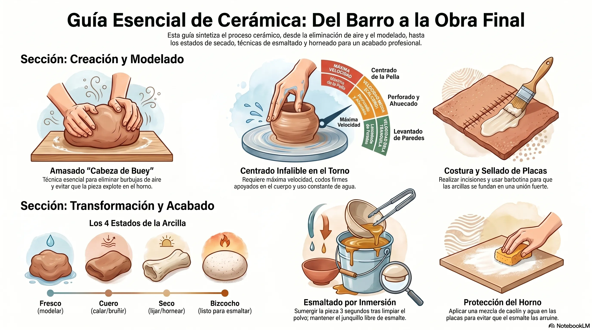

Este documento sintetiza los conocimientos, técnicas y experiencias compartidas por expertos en el ámbito de la cerámica artesanal y artística. La cerámica se presenta no solo como una disciplina artística, sino como un oficio jerarquizado cuya transmisión pedagógica es fundamental".
Los pilares del éxito en la producción cerámica residen en el dominio de los procesos básicos: desde un amasado a conciencia para eliminar el aire, hasta un centrado firme en el torno, que es la base de toda forma compleja. Asimismo, se destaca la importancia de la constancia en la práctica y el mantenimiento riguroso del equipamiento —especialmente el torno alfarero— para garantizar la durabilidad de las herramientas y la calidad de las piezas. La disciplina abarca desde técnicas ancestrales y primitivas, como el bruñido y el pellizco, hasta innovaciones tecnológicas como la impresión 3D y el diseño industrial.

Fundamentos de la Preparación y el Modelado
La calidad de una pieza terminada depende estrictamente de las etapas iniciales de preparación del material.
El Amasado (Técnica "Cabeza de Buey")
El objetivo primordial es eliminar burbujas de aire que podrían romper la pieza en el horno.
- Procedimiento: Realizar movimientos cortos hacia abajo con la base de la palma para evitar lastimar las muñecas. Se debe contener la arcilla por los costados para que no se extienda excesivamente.
- Verificación: Cortar la pella con una tanza en tres partes para asegurar la ausencia de huecos de aire.
- Unión: Para volver a unir las partes cortadas, se deben golpear (liso con liso) para no reincorporar aire.
Estados de la Arcilla
Es crucial identificar el estado del material según la tarea a realizar:
| Estado | Características | Usos Recomendados |
|---|---|---|
| Fresco | Maleable, cambia de forma fácilmente. | Modelado inicial, centrado en torno. |
| Cuero | Consistencia similar al cuero; no se deforma al manipular. | Calado, esgrafiado, bruñido, unión de placas. |
| Seco | Color más claro (grisáceo/blanco), pérdida total de humedad. | Lijado suave, ingreso al horno para bizcochado. |
| Bizcocho | Ya horneada, color blanco, sonido metálico al golpe. | Aplicación de esmaltes. |
Técnicas de Construcción y Torno
El Torno Alfarero
El torno requiere constancia, dedicación y control corporal.
- Centrado: Es la etapa crítica. Se requiere máxima velocidad, abundante agua y una postura firme (espalda derecha, codos apoyados en la cintura o cadera).
- Regla de Oro: "Toda forma parte de un cilindro". Si el cilindro está bien construido (paredes parejas), puede derivar en teteras, luminarias o floreros.
- Velocidades: Máxima para centrado; media o "crucero" para perforado y levantado de paredes.
- Retirado de piezas: Usar una tanza con agua limpia sobre la platina para que el líquido pase por debajo y despegue la pieza por vacío.
Construcción Manual
- Pellizco o Hueco Directo: Técnica primitiva donde se crea la forma presionando con el pulgar desde el centro de una bola de arcilla hacia afuera, manteniendo un espesor parejo.
- Planchas: Uso de "niveles" (varillas de madera de grosores específicos como 6mm, 7mm o 1cm) para asegurar un espesor uniforme en toda la placa. Es vital trabajar sobre madera entelada para evitar que la arcilla se pegue.
- Costura y Sellado: Para unir placas, se realizan incisiones (costura) y se aplica barbotina. Se refuerza la unión con un pequeño "choricito" de arcilla que se funde para eliminar el ángulo recto y fortalecer la estructura.
Colada con Moldes de Yeso
Ideal para producción en serie de piezas idénticas.
- El Molde: No debe saturarse de agua. Se limpia con esponja apenas húmeda.
- Proceso: Se llena con barbotina (arcilla líquida tamizada) y se espera (aprox. 25 min) a que el yeso absorba la humedad y genere el espesor deseado. Luego se vacía el excedente y se deja secar antes de desmoldar.
Decoración, Esmaltado y Cocción
Técnicas Decorativas en Crudo
- Bruñido: Sellar los poros de la pieza en estado de cuero usando una herramienta suave (cuchara, piedra de canto, tapitas plásticas) para obtener un brillo natural y superficie lisa.
- Calado: Realizar incisiones en estado de cuero para permitir el paso de la luz. Se recomienda hacer calados pequeños inicialmente, ya que pueden agrandarse pero no achicarse.
El Proceso de Esmaltado
El esmalte se compone de polvo y agua (proporción sugerida: 1kg de esmalte por 800cc de agua).
- Inmersión: Sumergir la pieza bizcochada de 2 a 3 segundos. Es vital revolver constantemente el esmalte porque decanta rápido.
- Reserva de Cera: Aplicar cera líquida en áreas donde no se desea esmalte (como el interior de macetas o la base).
- Limpieza del Junquillo: Siempre se debe limpiar la base de la pieza con una esponja para evitar que el esmalte se funda con la placa del horno.
Quema de Rakú
Técnica de origen japonés (siglo XVI) caracterizada por el choque térmico.
- Las piezas se sacan del horno al rojo vivo (850°C-900°C) y se enfrían bruscamente.
- La pasta debe estar preparada con talco o chamote para resistir el impacto de temperatura.
- Produce efectos únicos en los esmaltes mediante procesos de reducción.
Herramientas y Mantenimiento del Equipamiento
Herramientas Caseras
Se pueden fabricar herramientas eficaces con objetos cotidianos:
- Lamas: Tarjetas de crédito viejas o envases de productos de limpieza cortados con bisturí.
- Devastadores: Un clip de papel moldeado, insertado en el tubo de una birome vieja y fijado con masilla de dos componentes.
Mantenimiento del Torno (Consejos de Experto)
Fidel, fabricante de tornos, enfatiza que el mantenimiento previene ruidos y fallas de tracción.
- Lubricación (Cada 6-8 meses):
- Eje: Usar aceite (de máquina de coser o de auto). Nunca usar grasa en el eje porque atrapa suciedad y se endurece.
- Pedalera y taco de goma: Usar grasa para asegurar movimientos suaves.
- Limpieza de la Platina: Evitar que el agua acumulada en la batea supere el nivel del rulemán, ya que esto oxida los rodamientos y traba el giro.
- Uso Correcto: Encender siempre el motor antes de presionar el pedal para evitar marcar la goma de tracción (oring).
Protección de Placas de Horno
Para evitar que el esmalte que gotea arruine las placas:
- Pintar las placas con una mezcla de caolín y agua (consistencia no muy pastosa). Esto actúa como antiadherente.
- Utilizar trípodes cerámicos (patas de gallo) con puntas de alambre kantal para apoyar piezas esmaltadas en su totalidad, minimizando las marcas de contacto.
El Arte y la Técnica del Centrado de Arcilla
El proceso de centrado de la pella de arcilla en el torno es un paso fundamental que requiere una combinación precisa de preparación, postura y técnica manual. A continuación, se detallan los pasos y técnicas para lograrlo:
1. Preparación de la arcilla
Antes de comenzar en el torno, el amasado es indispensable; si la arcilla conserva burbujas de aire, será casi imposible centrarla correctamente y la pieza fallará en las etapas de levantado. La pella debe tener una forma redondeada y es crucial que la base sea totalmente plana, sin huecos. Si la apoyas con un hueco en la base, quedará aire atrapado entre la arcilla y la platina del torno, arruinando el centrado. La pella se fija al torno con un golpe seco.
2. Postura corporal y puntos de apoyo
La posición de tu cuerpo determinará el éxito del centrado. Se recomienda colocar un adoquín o piedra debajo del pie que no acciona el pedal para que ambas rodillas queden a la misma altura, funcionando como puntos de apoyo firmes. Debes mantener la espalda derecha y fijar tu eje; si estás dudando o aplicando fuerzas inestables, la arcilla no sabrá hacia dónde ir. Los codos siempre deben estar trabados, apoyándolos sobre las piernas, la cintura o la cadera.
3. Velocidad y uso del agua
Para la etapa de centrado se debe utilizar siempre la máxima velocidad del torno. Asimismo, el uso de agua es fundamental; debes hidratar la arcilla constantemente para que la pasta se deslice entre tus manos y evites que se trabe, se pegue o se frene bruscamente.
4. Técnica de manos: Subir y bajar la arcilla
El centrado se logra haciendo que la pasta suba y baje de manera controlada. Las dos manos deben trabajar coordinadas: una dirige el movimiento y la otra contiene la arcilla para que no se deforme.
- Para bajar la pella: La mano de arriba (generalmente la derecha) empuja hacia abajo con mayor fuerza, mientras que la mano del costado (la izquierda) empuja hacia el centro para contener la expansión.
- Para subir la pella: La mano del costado ejerce más presión hacia el centro, mientras que la mano de arriba alivia la presión y simplemente contiene el crecimiento vertical.
5. La retirada de las manos y la práctica
Una vez que la pella está perfectamente centrada, es vital retirar las manos muy lentamente. Si las quitas de forma rápida o brusca, la pieza se descentrará automáticamente y tendrás que empezar de nuevo. Dado que este proceso requiere coordinar la cabeza, los brazos, las manos y las piernas, se sugiere realizar ejercicios de práctica consistentes en centrar la pieza, descentrarla intencionalmente y volverla a centrar repetidas veces para adquirir memoria muscular.